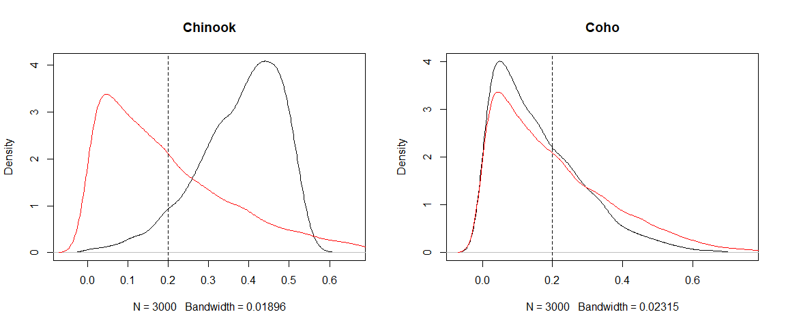
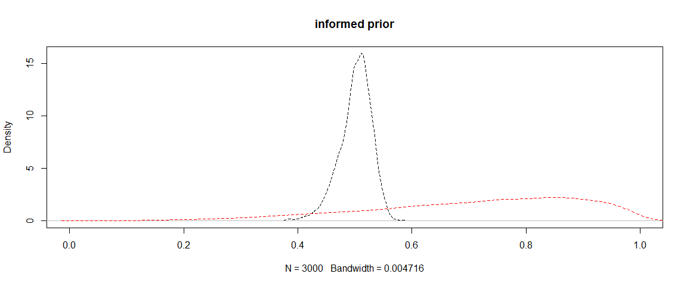

How much has the data informed your isotope mixing model?
The contributions of different food sources to animal diets is often a mystery. Isotopes provide a means to estimate those contributions, because different food sources often have different isotopic signatures. We would typically use a Bayesian mixing model to estimate the proportional contributions of different food sources to samples taken from the animal.
Isotope mixing models are fitted within a Bayesian framework. This means that the end results (AKA ‘posterior distributions’) are influenced by the data, the model and the prior distributions. Priors are specified for each parameter in the model, including the source contributions.
In the article “Quantifying learning in biotracer studies” (Brown,et al. Oecologia 2018) we describe how comparing priors and posteriors with information criteria is important to determine the influence of the data on the model.
This blog describes how to use my BayeSens R package to calculate information criteria for mixing models.
Why mixing model priors matter
The default prior for most mixing model has a mean of 1/n, where n is the number of sources. So if we had five potential food sources this means our starting assumption is that on average the consumer eats and assimilates 20% of each prey item.
Uncareful use of mixing models has resulted in findings from some peer-reviewed being contested. For instance, if the user just puts sources in the model ‘just to see’ if they matter, the starting assumption is that, on average, each contributes an equal fraction to the diet. This starting assumption is in many cases ridicilous.
When the data are not particularly informative, the model will return the result that every item contributed an equal fraction to the animals diet. The authors may then write this up as a new ‘result’ when in fact it was just the default assumption of the software package being reflected in their outputs.
In general I am quite suspicious of all the isotope studies reporting generalist consumers that eat equal fractions of prey. These patterns may well just reflect the default priors.
Adding to the confusion is that some call the default priors ‘uninformative’.
Priors for mixing models are all informative, eventhe so called ‘uninformative’ priors. The prior for source contributions bounded between 0-1, and source contributions must sum to 1, so it can never be truly flat in that range.
Solutions
You should always plot your priors and posteriors to check what is going on. You can very quickly identify this issue of uninformative data. Then in your write up, you could put less emphasis on results that look like the priors.
You can also calculate statistics that measure how different prior and posterior are. In our paper, we described several statistics taken from information theory. You can then easily report these statistics to summarize where prior and posterior are different (or not).
For instance, in a recent study of coastal fish specices we fitted many models across many species and regions, so we reported the differences as a table in the supplemental material.
How to use the R package
This blog demonstrates how information criteria can be calculated for mixing models fit with MixSIAR.
We will apply the simple marginal information criteria from that paper to the Killer Whale example, see vignette("killerwhale_ex") in MixSIAR.
The killer whale example is a nice simple one with no covariates or random effects. If you have covariates or random effects, you’ll need to be careful to compare priors to posteriors at the same locations on the fixed/random effects.
It will be helpful to have some understanding of MixSIAR’s data structures, because we need to find the posterior samples in the model output.
Killer whale example
First load the packages we need:
library(BayeSens)
library(MixSIAR)Now load the data (this is verbatim from the Killer whale example).
mix.filename <- system.file("extdata", "killerwhale_consumer.csv", package = "MixSIAR")
mix <- load_mix_data(filename=mix.filename,
iso_names=c("d13C","d15N"),
factors=NULL,
fac_random=NULL,
fac_nested=NULL,
cont_effects=NULL)
source.filename <- system.file("extdata", "killerwhale_sources.csv", package = "MixSIAR")
source <- load_source_data(filename=source.filename,
source_factors=NULL,
conc_dep=FALSE,
data_type="means",
mix)
discr.filename <- system.file("extdata", "killerwhale_discrimination.csv", package = "MixSIAR")
discr <- load_discr_data(filename=discr.filename, mix)Draw samples from the prior
Let’s draw samples from the prior. You can also plot this with MixSIAR’s plot_prior function, but we need a matrix of the samples for calculating info criteria later.
alpha <- rep(1, source$n.sources) #default prior values
p_prior <- MCMCpack::rdirichlet(10000, alpha) #draw prior samplesLet’s plot just the prior for the first source (since they are all the same in this case)
#Plot histogram and density (same data, different ways to view it )
par(mfrow = c(1,2))
hist(p_prior[,1], 20, main = source$source_names[1])
plot(density(p_prior[,1]), main = source$source_names[1])
abline(v = 1/source$n.sources)
As you can see the default prior clearly isn’t ‘uninformative’ because it is centred around 1/number of sources (in fact it has mean 1 over the number of sources). It might be better called the ‘uninformed’ (by the user) prior. This means the prior will have a lower mean the more sources you include in the model.
Run the model
This is verbatim from the Killer Whales example.
model_filename <- "MixSIAR_model_kw_uninf.txt" # Name of the JAGS model file
resid_err <- TRUE
process_err <- TRUE
write_JAGS_model(model_filename, resid_err, process_err, mix, source)
jags.uninf <- run_model(run="test",mix,source,discr,model_filename,alpha.prior = alpha, resid_err, process_err)
## module glm loaded
## Compiling model graph
## Resolving undeclared variables
## Allocating nodes
## Graph information:
## Observed stochastic nodes: 12
## Unobserved stochastic nodes: 23
## Total graph size: 766
##
## Initializing modelI’ve used the test run mode here just to speed things up for the example.
You should absolutely use long chains (e.g. run = "long") when calculating info criteria. They are quite sensitive to the number of MCMC samples if there are few samples. We need enough samples to get a good idea of the posteriors full shape.
Extract samples
Here’s where it helps to have some idea of how MixSIAR structures outputs. We need to find the posterior samples. You can dig around using str(jags.uninf). I did that and found the samples under jags.uninf$BUGSoutput as below:
p_post <- jags.uninf$BUGSoutput$sims.list$p.globalNow we have a matrix of prior samples and a matrix of posterior samples we can just compare them with the hellinger or kldiv (Kullback-Leibler divergence) functions from BayeSens. I’ll compare just the first source (Chinook salmon).
hellinger(p_prior[,1], p_post[,1])
## Hellinger distance - continuous
## [1] 0.61
##
## Hellinger distance - discrete
## [1] 0.65
kldiv(p_prior[,1], p_post[,1])
## Kullback-Leibler divergence
## [1] 5.7We’d like to know what the info criteria are for all sources, so we could manually select columns to compare, or just use some sort of iterating function to do them all at once. Here I use lapply and put them into a dataframe:
hell_out <- lapply(1:source$n.sources, function(i) hellinger(p_prior[,i], p_post[,i])$hdist_disc)
kl_out <- lapply(1:source$n.sources, function(i) kldiv(p_prior[,i], p_post[,i])$kd)
info_df <- data.frame(source_names = source$source_names,
hellinger = unlist(hell_out),
KLD = unlist(kl_out))
info_df
## source_names hellinger KLD
## 1 Chinook 0.6536184 5.6601980
## 2 Chum 0.3659136 1.6746118
## 3 Coho 0.3053054 0.9676074
## 4 Sockeye 0.5260229 3.6985169
## 5 Steelhead 0.5430961 4.2273867Hellinger values near 0 are very similar to the priors, Hellinger values near 1 are very different to the priors. The KLD ranges from >0 to infinity, so greater values indicate greater differences from the prior. So these results indicate to us that the model and data are not very informative about Coho, but much more informative about Chinook. To interpret why this is you should plot the priors and posteriors.
You can use output_JAGS to do this. We will do it ourselves, just to practice data wrangling. For Chinook and Coho:
par(mfrow = c(1,2))
plot(density(p_post[,1]), main = source$source_names[1])
lines(density(p_prior[,1]), col = "red")
abline(v = 1/source$n.sources, lty = 2)
plot(density(p_post[,3]), main = source$source_names[3])
lines(density(p_prior[,3]), col = "red")
abline(v = 1/source$n.sources, lty = 2)
It is pretty clear that contributions for Chinook have shifted higher, whereas the data doesn’t give us much reason to believe Coho are any more important than the prior suggested.
Note that you can also get high information criteria stats if the posterior mean stays the same as the prior’s mean, but the distribution changes shape (e.g. gets thinner). For instance, if the data were strongly informative that Coho were not an important food source, then we could have the same posterior mean of 0.2, but the uncertainty intervals would be much narrower around 0.2 than in the prior.
Informative priors
The killer whale example also gives a model fit with informed priors. Here’s the code verbatim from MixSIAR:
kw.alpha <- c(10,1,0,0,3)
kw.alpha <- kw.alpha*length(kw.alpha)/sum(kw.alpha)
kw.alpha[which(kw.alpha==0)] <- 0.01
model_filename <- "MixSIAR_model_kw_inf.txt"
resid_err <- TRUE
process_err <- TRUE
write_JAGS_model(model_filename, resid_err, process_err, mix, source)
jags.inf <- run_model(run="test",mix,source,discr,model_filename,alpha.prior=kw.alpha, resid_err, process_err)
## Compiling model graph
## Resolving undeclared variables
## Allocating nodes
## Graph information:
## Observed stochastic nodes: 12
## Unobserved stochastic nodes: 23
## Total graph size: 766
##
## Initializing modelThe only extra step we need to do now is draw samples from the prior and posteriors:
p_prior_inf <- MCMCpack::rdirichlet(10000, kw.alpha) #draw prior samples
p_post_inf <- jags.inf$BUGSoutput$sims.list$p.global
hell_out_inf <- lapply(1:source$n.sources, function(i) hellinger(p_prior_inf[,i], p_post_inf[,i])$hdist_disc)
## Warning in sqrt(1 - integrate(fx1, minx, maxx)$value): NaNs produced
## Warning in sqrt(1 - integrate(fx1, minx, maxx)$value): NaNs produced
kl_out_inf <- lapply(1:source$n.sources, function(i) kldiv(p_prior_inf[,i], p_post_inf[,i])$kd)
info_df <- cbind(info_df,
data.frame(
hellinger_inf = unlist(hell_out_inf),
KLD_inf = unlist(kl_out_inf)))
info_df
## source_names hellinger KLD hellinger_inf KLD_inf
## 1 Chinook 0.6536184 5.6601980 0.7829688 8.7014174
## 2 Chum 0.3659136 1.6746118 0.3353133 1.0081589
## 3 Coho 0.3053054 0.9676074 0.1208581 0.1794651
## 4 Sockeye 0.5260229 3.6985169 0.1262016 0.1923406
## 5 Steelhead 0.5430961 4.2273867 0.6469540 5.7095752The warning about NA’s comes from the prior for some groups being near zero, so the continuous version of the Hellinger stat isn’t able to be calculated. We are using the discrete version though, so its no problem to us.
So with the informed priors the Hellinger has increased for Chinook and Steelhead and decreased for the others.
Remember that the information criteria just measure the distance from the prior. So if our data just confirm the informed priors, or there isn’t enough data to overcome the informed priors, then the information criteria will be near zero. In this case we have only two tracers and samples from 12 killer whales. The prior we used on Sockeye was very strong to zero consumption, so our result stays the same.
The below plot shows the priors in red and posteriors in black for the model with informed priors.
plot(density(p_post_inf[,1]), lty = 2, main = "informed prior", xlim = c(0,1))
lines(density(p_prior_inf[,1]), lty = 2, col = "red")
I haven’t plotted the informed Coho model because both the prior and posterior are a spikes near zero.
You can clearly see the model has shifted the consumption of Coho downwards relative to the informed prior.